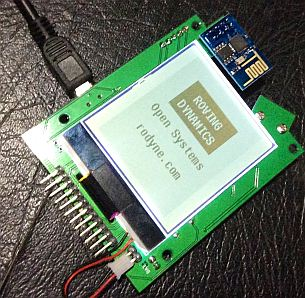
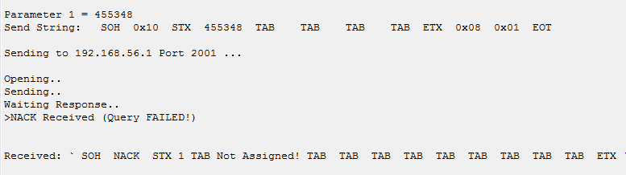
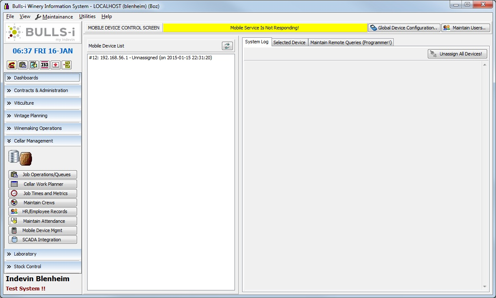
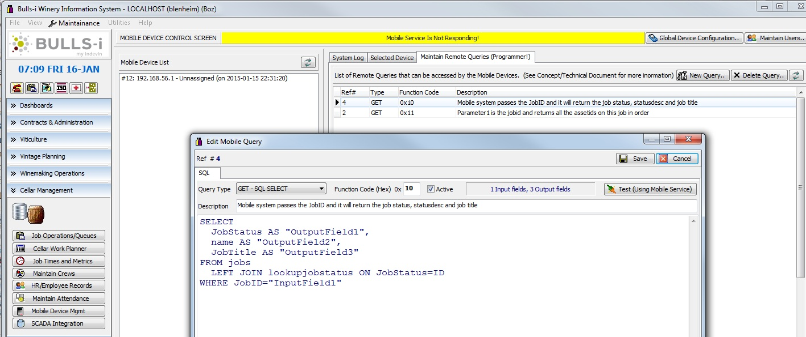
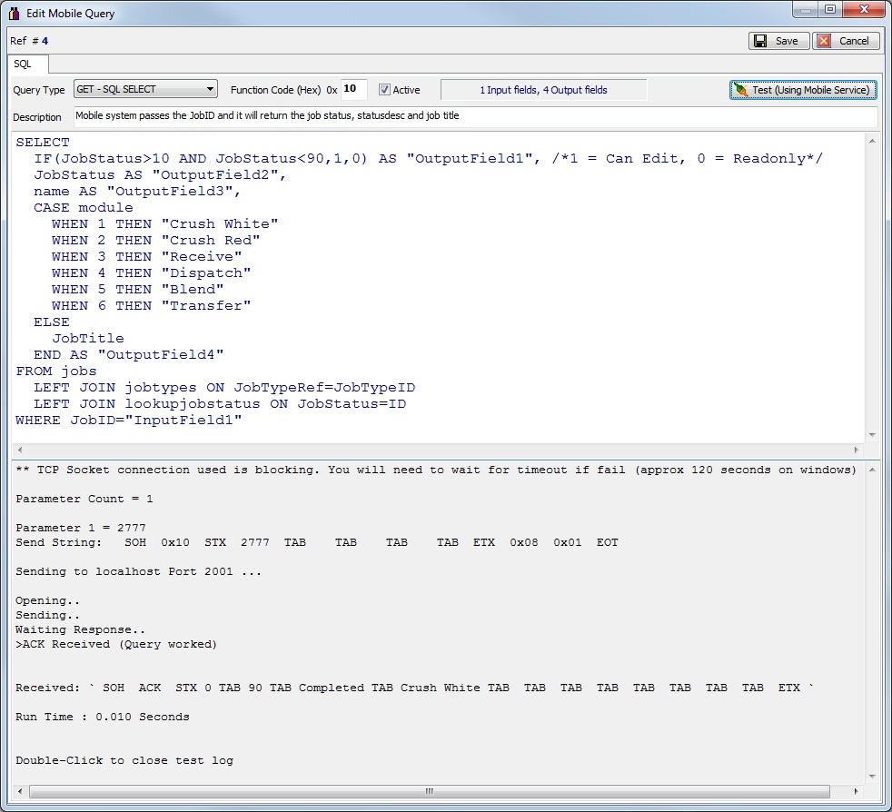

Getting close to the end game of the mobile data-collection terminal and its here we start to think of how all the different parts are going to fit together as a whole to be useful.

As an aid for me I created an Open Office diagram a little while back explaining how this will work in one of my customers case, this diagram can be found here as a PDF (Link to Open Office Document here ) Obviously each implementation will be different but not much so as most MRP systems are fairly similar in concept.
The document shows that in order to make the system work I need to write 3 lots of code:
- The PIC32 Firmware which will use a proprietary (i.e. I made it up) messaging protocol sending and receiving very simple messages on TCP Port 2001 (or any number of your choosing). These messages have at there root a couple of key fields, ie MRP system job and asset numbers which can uniquely retrieve job data for the factory. Eg when the barcode scanner scans a job sheet it then sends the unique jobid to the MRP system to request job statuses etc.
- In order for the above to work we need a PC program (a service or daemon as it does not need to be visual) which listens to port 2001 and interprets this simple message into a MySQL query which will retrieve the Job record from the MRP system and package the results into a simple message that the terminal can easily parse.

The message trace above is from my work in progress implementation of this program, it shows the message sent by the mobile and the reply received from the server (in this case bugger off as the terminal was not assigned to a user!) I have extracted the thread where the action takes place here this will be the easiest place to start if your converting it to another language. The current working/test (lazarus/freepascal) code and PC program is: Mobile Service (FreePascal Program and Code). Note this version does not include the additional security checks I envisage, this will come. - As this will form an integrated part of the MRP system we also need a way for a supervisor to assign a terminal to an operator on the factory floor and to put a user friendly face to the program at the back-end office. eg in my case I will build a module to my Bulls-i MRP system which allows the assigning of a user to a terminal before it will work and to log all transactions back to the supervisor terminal. ie they can assign the terminal to Fred and as Fred scans jobs and completes tasks these will be displayed real-time on the supervisors PC program. this program will also print the configuration sheets for the mobile (ie the barcodes for SSID, security and Host program) that it uses to set up the WiFi and Host connection. I need to write this in Pascal as the MRP system is written in Delphi (shot below).



The last picture is especially interesting as it shows the screen where I edit the functions/queries, I’ve included a test button which will open a socket to the mobile server and actually test it end-to-end, quite a good idea to eliminate stupid problems. - I will certainly release the source for the server on github, however unfortunately the MRP system it goes to is not open source so some guessing on the part of the builder is required until I publish a stand alone item. Still anyone familiar with the concepts should be able to decipher it quite easy and each MRP system will probably be unique.
- The SQL to create the mobile DB is mobile-db.sql
If you don’t have the code for the system you are integrating it into then it may also be possible to combine programs 2 and 3 into a single web based system. There is also no reason why you cannot use TCP port 80 for the mobile messages instead of port 2001. I’ve not written a web program for about 9 years so doing a complete open source demo may have to wait
Security is important these days, luckily we are already running a layer of security above the standard industrial systems such as MODBUS by using an encrypted wireless network (WPA2) this prevents eavesdropping but does not prevent spoofing (ie someone with malicious purposes pretending to be a mobile terminal) As I have published most of my secret source this would be relatively easy (assuming you were on the corporate network somehow) The got-cha here is that only certain combinations or job ID’s and asset ID’s in the MRP system will work, and this is a next to impossible task without a print-out of a in-progress job. Also in the live system I will be adding another layer of authentication that the user will need to scan their RFID tag to do an update just as they have to do on the current touch screens. While not impossible, it does put deviousness outside the realms of your average hacker (I would find it quite difficult myself even as the author)
Do not dispare Hipsters and Pascal haters, the PC programs are relatively short and should be quite easy to read and covert to you favourite language de jour. I will post up the work-in-progress code in the next few days.